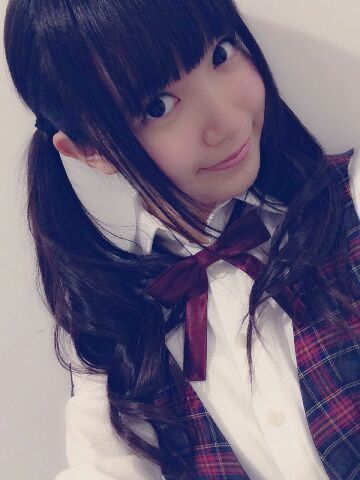
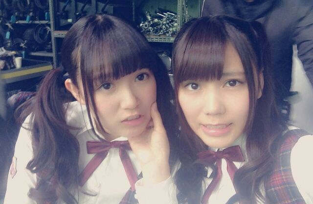
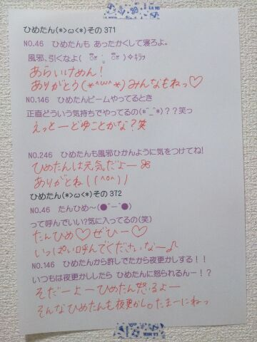

| 2014/03 01 Sat | ひめたん(*>ω<*)そ の413 |
こちら新制服。

お姉さん組はグレーのチェック
妹ちゃん組は赤のチェック
あなたはどちらがお好み( ´ω` )？
とゆーことでどもこんばんはー
ひめたんですー
アンダー曲のMVみたの
うんうんいい感じ( ´ω` )
あっ
NOGIBINGO!2 観てくれたかなー？
雪山に行ってまいりました！
初ゲレンデ！
やーんもうねー
とっても楽しかったよー(・∀・)
来週もみてねー

みんな大好きそんバカコンビ


そんな川後さんと
べびめのライブ観に
武道館行ってきたよー！
ひなちゃん一緒に来てくれて
ありがとー(ノ)・ω・(ヾ)
ライブってのはステージ立ってみるのと
客席から観るのじゃ
全然違うなーと改めて思いました。
すーめた ゆいめたちゃん もあめたちゃん
お疲れさまでした♪♪
ライブに関わってくださったすべてのみなさん
ステキなライブを
ありがとうございました！

 ひめたんの弱点を教えてくれ
ひめたんの弱点を教えてくれ
こんなとこで教えるわけないじゃんかよー
弱点ってのは隠すもんなんだよー
いっぱいあるけどねーはむはむ
ひめたんは願いが叶うとしたら
「視力が8.0になる」
「身長が4mになる」
「100mを1秒台で走れるようになる」の
どれがいい？
あたしは逆に問いたいよ。
まず なにゆえこの三択なのか
あなただったら三つの中で何を望むのか、ね
そーだねーどれもお得感に欠けるけども
ひめたんは四色ボールペンならどの色が好き？
僕は緑色がいつと残ってしまいとても困っています
わかる！これすんごいわかる！
なんで緑？ってなるー( `ω´ )！
よく使う４色ってなんだろうね
黒・赤・青・橙じゃない？
ひめたんのことをひめたんって呼ぶか
たんひめって呼ぶか
マクゴナガル先生と呼ぶか悩んでます。
どれがいいですか？
まくごな......うんもーいいや
好きに呼んでれていいんだけどさ
悩んだならもうオーソドックスに
ひめたーんはどうかな( ´ ▽ ` )？
真夏さん・まいまいは たんひめーって呼ぶよ？
姫たんは紅茶派?それともコーヒー派?
それともデスソース？
デスソース派に決まってんじゃーんって
ばーかばーかばーか♪♪
蜆派？蜊派？蛤派？
あれ、ひめたんってこういう系
駄目な人だったっけ？
うん......そうだね
いや別に吃ってないけど
そうだね......うーんどれでもないか......な(小声)
ひめたんゎ基本お家で何をしてますか？
ぼーっとしてるかな
無意味に何回もお風呂入ったり
してるかな(´×ω×`)
東京に遊びに行ったら
いつもお土産何にしようか迷うんだけど、
ひめたんが考える東京の定番土産はなーに？
東京バナナって答えるあたしは
きっと田舎者なんでしょうね
最近はいっぱいあるよね！
スカイツリーバウムとかさ、ごまたまごとかさ
東京に住んでると逆にわからんなー(´・_・｀)
ひめたんのブログの
コメント欄下２ケタに46を踏んだ方へ
手書きでコメ返するコーナー
＼ ひめたん46 ／

いつもたくさんのコメント
ありがとうございます
うんうん、乃木坂ちゃんがどーなるか
ひめたんも不安だけど
とりあえずがんばります！
これからもよろしくね＊
今夜は「乃木坂46 SHOW」！
みんな大好きなあの曲が
テレビ初公開です！
(＊´・ω・＊)
コメント(446)
2014/03/01 23:59